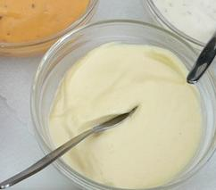

Plantaardige mayonaise
Home

Het recept
Ingredienten
- 300g Tofu
- 2 eetl olijfolie
- 2 eetlepels citroensap
- 2 tl appelcider azijn
- 2 tl mosterd
- 1/2 tl zout
- 1/4 tl peper
Bereiding
- Voeg alle ingrediënten toe aan een blender en meng tot alles glad is.
- Het kan direct worden geserveerd. Breng het anders over in een glazen pot met een luchtdicht deksel en bewaar het in de koelkast, die ongeveer 1 week meegaat.